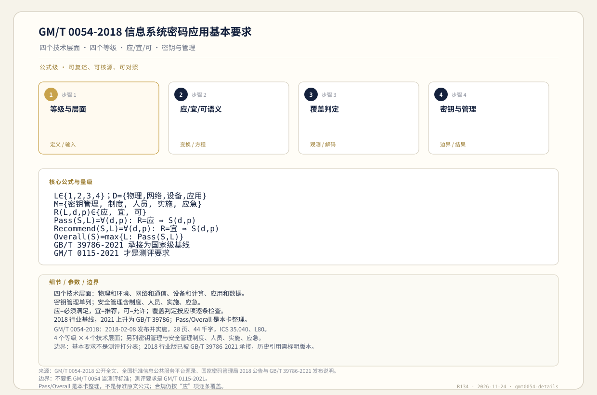
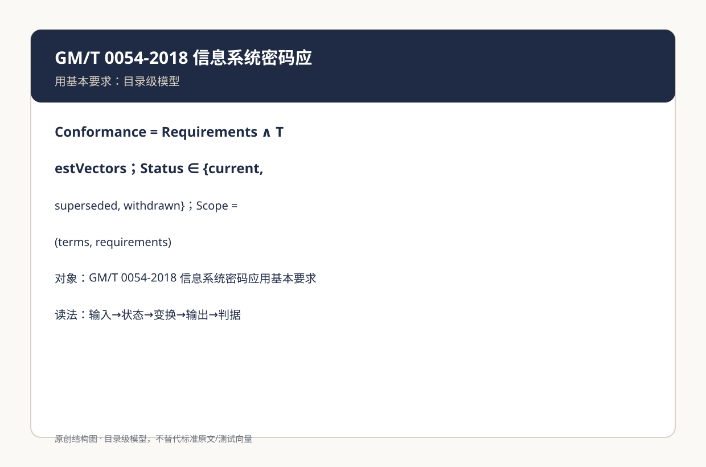

原理与机制
标准：GM/T 0054-2018 信息系统密码应用基本要求（GM/T 0054-2018 General Requirements for Information System Cryptography Application）。GM/T 0054-2018 把信息系统密码应用拆成四个技术层面：物理和环境安全、网络和通信安全、设备和计算安全、应用和数据安全。每个层面按等级保护一级至四级分别写要求，并用“应/宜/可”标注强制、推荐与允许。除技术层面外，标准单列密钥管理，并要求安全管理制度、人员、实施、应急。形式化地看，给定系统 S、等级 L、层面 d 和要求项 p，R(L,d,p) 取“应/宜/可”；Pass(S,L) 要求所有“应”项都被 S 满足，Overall(S) 取满足 Pass 的最高等级。

为什么重要
这份 2018 行业标准是密评试点早期的基线：它先回答“不同等级的信息系统应当怎么用密码”，再由 GM/T 0115 回答“怎么测评”。把两者混成一张表，会把“要求”误当“评分”，也会把 2018 版与 2021 国家标准 GB/T 39786 的差异抹掉。应/宜/可的语义也决定了合规判定：一个系统不能靠“宜”项做得好来抵消“应”项缺失；密钥管理和安全管理不是附录，而是与技术层面并列的基线组成。
应用与实例
做差距分析时，先定系统等级 L，再按四个技术层面和密钥管理、制度、人员、实施、应急逐项填 R(L,d,p) 与现状 S(d,p)。只把“应”项列为必须整改；“宜”项作为改进建议；“可”项按场景选用。测评阶段另用 GM/T 0115 的单元、对象和量化规则，不把该条目的 Pass 谓词当评分公式。需要引用国家标准时，用 GB/T 39786-2021，并保留 2018 行业版的版本坐标。

边界与攻击面
把 GM/T 0054 当测评标准会误用：它没有 GM/T 0115 的测评单元、证据要求和量化评分。把“宜”项当“应”项会过度合规，把“应”项漏掉则会直接不通过。标准状态本身也有版本风险：全国标准信息公共服务平台记录显示“废止”，检索页与部分销售页仍标“现行”，而官方 2021 说明确认其内容已上升为 GB/T 39786-2021。因此历史引用必须写明“GM/T 0054-2018 行业基线”，不能把它当作当前唯一依据。
历史与背景
GM/T 0054-2018 于 2018-02-08 由原国家密码管理局发布并实施，用于指导密评试点期间的密码应用。2021 年，标准经修改完善上升为 GB/T 39786-2021《信息安全技术 信息系统密码应用基本要求》，于 2021-10-01 实施。与此配套，GM/T 0115-2021 和 GM/T 0116-2021 分别规范信息系统密码应用测评要求与测评过程；GM/T 0054 因此主要作为 2018 行业基线保留在历史与标准对照中。
技术参数与复算边界
该条目的形式模型是 (S=\min_i S_i,\quad S_i\in{\text{密钥强度},\text{分组安全},\text{实现安全}})。输入：输入：GM/T 0054-2018 信息系统密码应用基本要求的公开参数、密钥/随机数与消息；变量说明：S 为综合安全强度；各分量取最小值，不能只看密钥位数。 预期输出：按 GM/T 0054-2018 信息系统密码应用基本要求 的规范执行后得到可验证的输出或可比较的优势界。 复算必须给出输入、步骤、输出和单位；示例只演示流程，不替代标准测试向量。
复杂度由密钥长度、分组/状态规模、轮数、随机数质量和敌手模型共同决定；参数越界、版本差异与实现侧信道都可能使公式结论失效。已登记限制：该条目只给出形式模型与可复算步骤，不声称已完成生产实现、侧信道认证或第三方安全评估。
逐步示例与核验
形式模型与复算步骤
[S=\min_i S_i,\quad S_i\in{\text{密钥强度},\text{分组安全},\text{实现安全}}]
GM/T 0054-2018 信息系统密码应用基本要求的公开参数、密钥/随机数与消息；变量说明：S 为综合安全强度；各分量取最小值，不能只看密钥位数。1.读取标准规定的密钥/分组/模式参数。2.按标准表换算等效强度。3.取最弱分量作为系统强度。边界：公式只覆盖已登记的参数与假设；参数取值、标准版本和实现细节仍以来源为准。
参考出处
- Wikipedia search entry for GM/T 0054-2018 信息系统密码应用基本要求. https://zh.wikipedia.org/w/index.php?search=GM%2FT%200054-2018%20%E4%BF%A1%E6%81%AF%E7%B3%BB%E7%BB%9F%E5%AF%86%E7%A0%81%E5%BA%94%E7%94%A8%E5%9F%BA%E6%9C%AC%E8%A6%81%E6%B1%82
- Handbook of Applied Cryptography (Menezes, van Oorschot, Vanstone). https://www.cacr.math.uwaterloo.ca/hac/